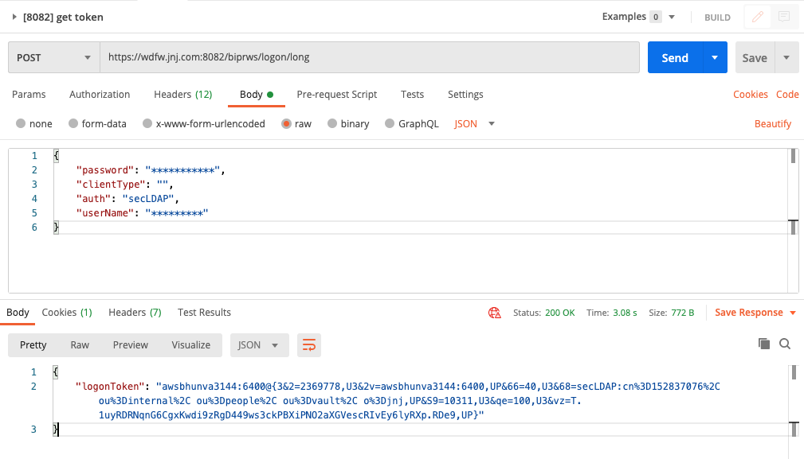
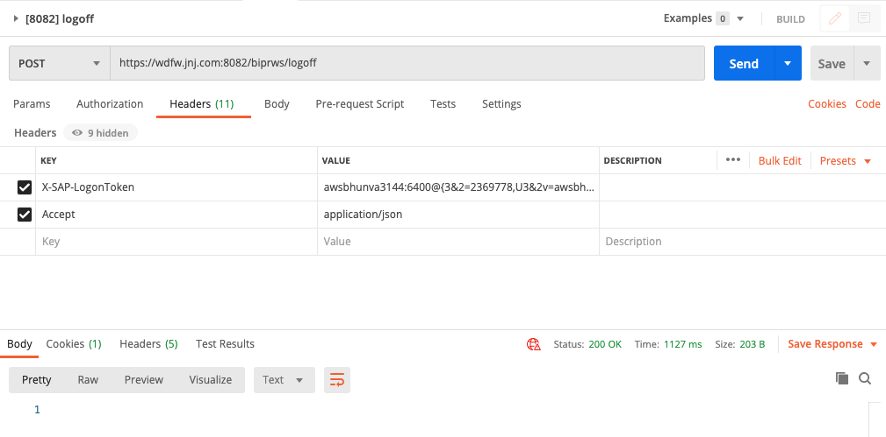
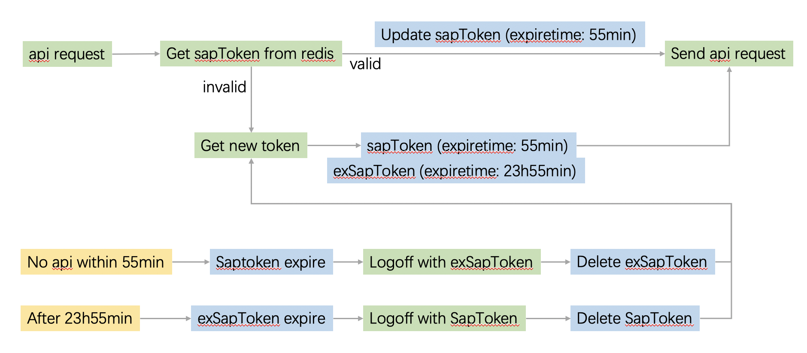

Authentication
| SI. No. | Description | REST API | Http Methods |
|---|---|---|---|
| 1 | Logon using username and password | http://host: |
GET,POST |
| 2 | Logoff (token must be in Header) | http://host: |
POST |
Get LogonToken API:
Method : POST Data Format: JSON
 
Session type
Session type Changed to Enterprise Session from the release 4.2 SP04 and onwards.
So that if user use any APIs mentioned in table , immediately session count will increase for the user in “CMC->Sessions” page.
Enterprise Session Token timeout default : 60 min.
Maximum timeout : 1440 min (24 Hrs).
Administrator can set this value in “CMC->Servers->WebApplicationContainerServer-> Right click on this server ->Properties->EnterpriseSession Timeout”.
http session timeout will not be applicable to Enterprise Sesison created using REST APIs.
Get LogonToken Workflow:
Version1:
const { EventEmitter } = require('events');
let globalToken;
const emitter = new EventEmitter();
async getToken() {
if (!globalToken) {
globalToken = 'pending';
process.env.NODE_TLS_REJECT_UNAUTHORIZED = 0;
const { data } = await axios.post(
'logon/long',
sails.config.custom.sap.auth,
{
baseURL: `${sails.config.custom.sap.endpoint}/biprws`,
},
);
globalToken = data.logonToken;
emitter.emit('token', globalToken);
setTimeout(() => {
globalToken = undefined;
}, 1000 * 60);
} else if (globalToken === 'pending') {
await new Promise((res, rej) => {
emitter.on('token', res);
setTimeout(() => {
rej();
}, 3000);
});
}
return globalToken;
},
Version2:
// let globalToken;
const authCache = {
token: '',
expiresAt: 0,
updatePromise: null,
};
async getToken() {
if (authCache.expiresAt < Date.now()) {
authCache.expiresAt = Date.now() + 30 * 1000; // Avoid concurrency
authCache.updatePromise = axios
.post(
'logon/long',
sails.config.custom.sap.auth,
{
baseURL: `${sails.config.custom.sap.endpoint}/biprws`,
},
)
.then((res) => {
authCache.expiresAt = Date.now() + 50 * 60 * 1000;
authCache.token = res.data.logonToken;
authCache.updatePromise = null;
fs.writeFile(
path.join(process.cwd(), './sap_token'),
authCache.token,
(err) => {
if (err) {
sails.log.error(err);
}
},
);
})
.catch(() => {
authCache.expiresAt = 0;
});
}
await authCache.updatePromise;
return authCache.token;
},
Version3: Redis
多实例只会有一个 Redis

const redis = require('redis');
const { promisify } = require('util');
const redisClient = redis.createClient({
db: sails.config.session.db,
password: sails.config.session.pass,
port: sails.config.session.port,
host: sails.config.session.host,
})
const getRedisAsync = promisify(redisClient.get).bind(redisClient)
const getNewToken = async () => {
sails.log.info('>>> Get new sap token');
const newtoken = await axios
.post(
'logon/long',
sails.config.custom.sap.auth,
{
baseURL: `${sails.config.custom.sap.endpoint}/biprws`,
},
)
.then((res) => {
sails.log.info('new token: ', res.data.logonToken);
// Enterprise Session Token timeout default : 60 min.
redisClient.psetex('sapToken', 55 * 60 * 1000, res.data.logonToken);
// Maximum timeout : 1440 min (24 Hrs).
redisClient.psetex('exSapToken', 1435 * 60 * 1000, res.data.logonToken);
return res.data.logonToken;
})
.catch((error) => {
sails.log.error('Fetch sap token error: ', error);
});
return newtoken;
};
// Redis 密钥空间通知, 在键过期被删除时得到通知
const SubscribeExpired = () => {
sails.log.info('>>> SubscribeExpired');
const sub = redis.createClient({
db: sails.config.session.db,
password: sails.config.session.pass,
port: sails.config.session.port,
host: sails.config.session.host,
});
const expiredSubKey = `__keyevent@${sails.config.session.db}__:expired`;
// const expiredSubKey = `__keyevent@0__:expired`;
sub.psubscribe(expiredSubKey, () => {
sub.on('pmessage', async (pattern, channel, message) => {
if (message === 'sapToken' || message === 'exSapToken') {
sails.log.info('message: ', pattern, channel, message);
try {
let extoken = '';
if (message === 'sapToken') {
extoken = await getRedisAsync('exSapToken');
redisClient.del('exSapToken');
} else {
extoken = await getRedisAsync('sapToken');
redisClient.del('sapToken');
}
if (!extoken) {
throw Error('No Such Key');
}
await axios
.post(
'/logoff',
sails.config.custom.sap.auth,
{
headers: {
'X-SAP-LogonToken': extoken,
Accept: 'application/json',
},
baseURL: `${sails.config.custom.sap.endpoint}/biprws`,
},
)
.then((res) => {
sails.log.info('Sap log off status: ', res.status);
getNewToken();
});
} catch (err) {
sails.log.error('Logoff error: ', err);
}
}
});
});
};
const getToken = async (noNeedFresh) => {
let token = '';
try {
const val = await getRedisAsync('sapToken');
if (!val) {
throw Error('No Such Key');
}
// 剩余过期时间
// await redisClient.ttl('sapToken', (e, t) => {
// console.log('token rest time: ', e, t);
// });
if (!noNeedFresh) {
redisClient.psetex('sapToken', 55 * 60 * 1000, val);
}
token = val;
} catch (err) {
token = await getNewToken();
}
return token;
};
// client.config("SET", "notify-keyspace-events", "Ex");
// 或者在redis.conf文件中设置notify-keyspace-events Ex
// ElasticCache中禁用了config命令, 需在AWS的ElasticCache平台创建parameter group
redisClient.send_command('config', ['set', 'notify-keyspace-events', 'Ex'], SubscribeExpired);
getToken(true);
module.exports = {
getToken,
async apiLoader(endpoint, forceUpdate = false) {
try {
const token = await this.getToken()
const { data } = await axios.get(endpoint, {
headers: {
'X-SAP-LogonToken': token,
Accept: 'application/json',
},
baseURL: `${sails.config.custom.sap.endpoint}/biprws`,
forceUpdate,
})
return data
} catch (error) {
sails.log(`Api error: ${endpoint} ${error}`)
if (error.message.includes('401')) {
this.getNewToken()
}
throw error
}
},
}
promise版
return new Promise((resolve) => {
redisClient.get('sapToken', async (err, val) => {
console.log('redisClient sapToken: ', err, val);
if (err || !val) {
console.log('get newtoken');
await axios
.post(
'logon/long',
sails.config.custom.sap.auth,
{
baseURL: `${sails.config.custom.sap.endpoint}/biprws`,
},
)
.then((res) => {
console.log('newtoken: ', res.data);
redisClient.psetex('sapToken', 60 * 60 * 1000, res.data.logonToken);
resolve(res.data.logonToken);
})
.catch((error) => {
sails.log.error('Fetch sap token error: ', error);
});
} else if (typeof val === 'string') {
await redisClient.ttl('sapToken', (e, t) => {
console.log('token rest time: ', e, t);
});
redisClient.psetex('sapToken', 60 * 60 * 1000, val);
resolve(val);
}
});
});